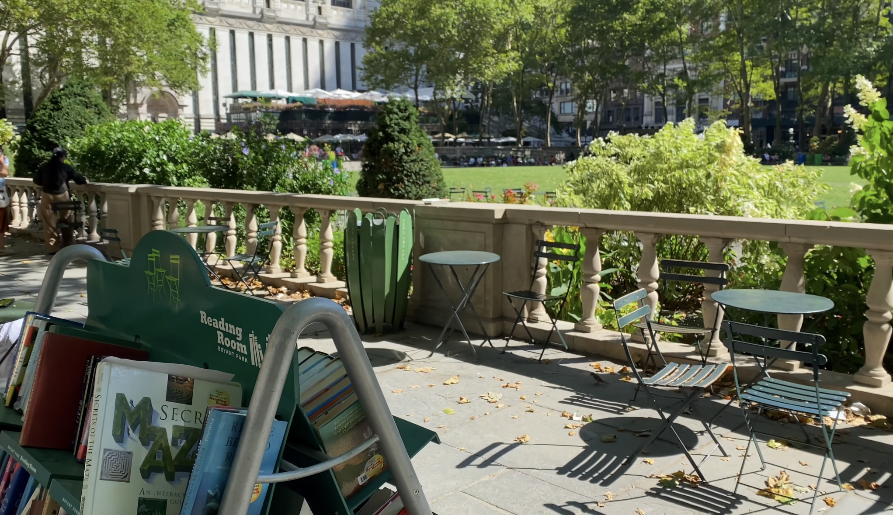
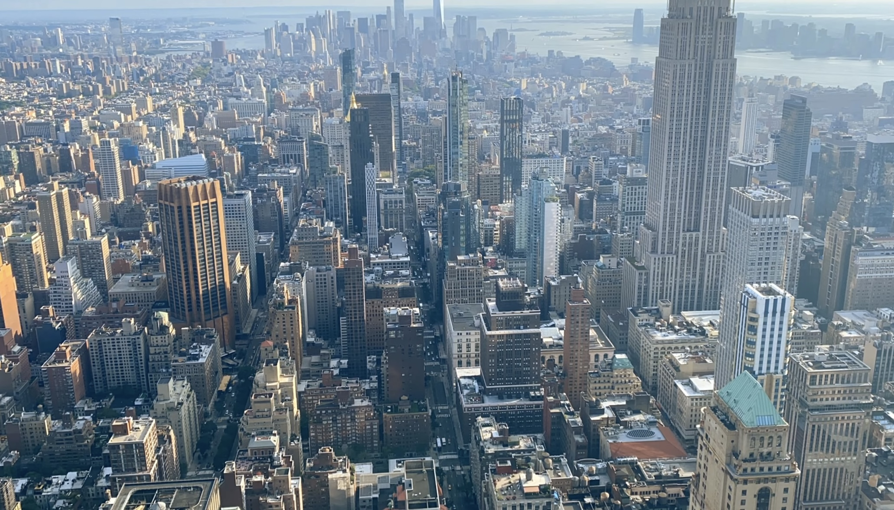
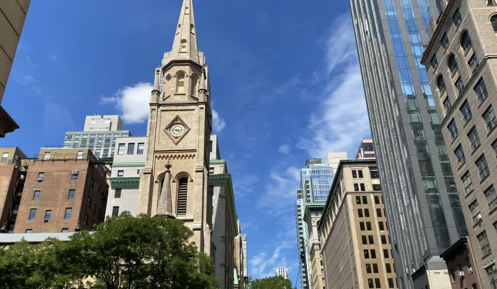
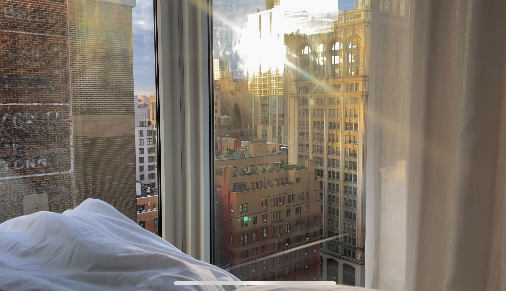
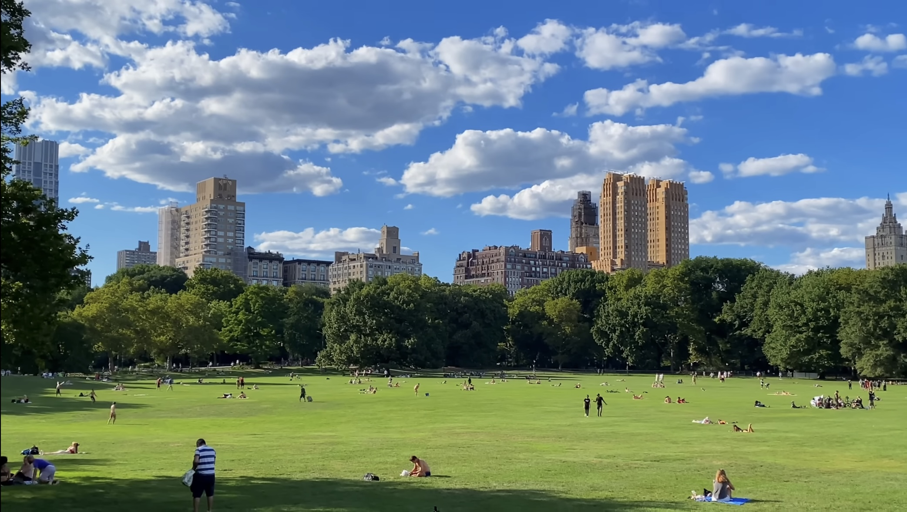
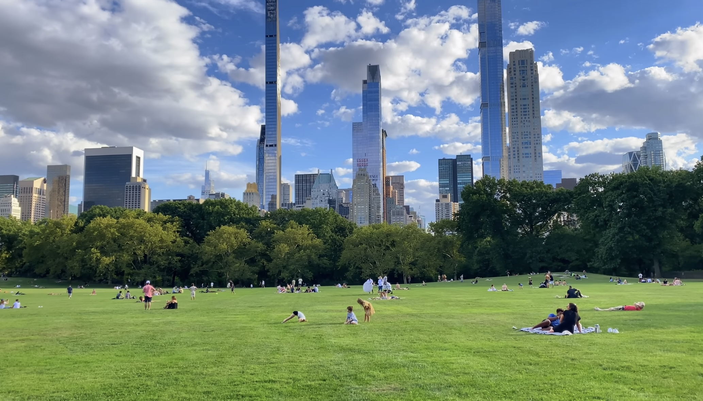
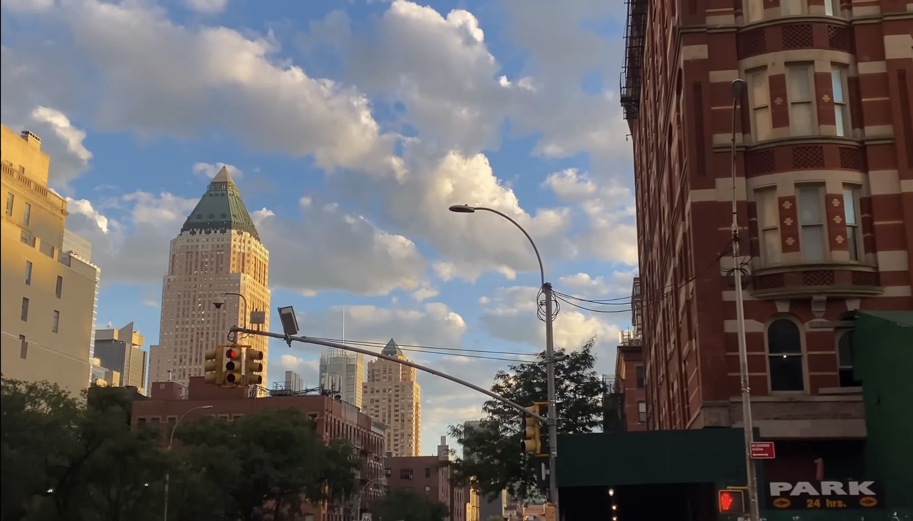

써밋
자기소개
사용자에게 좋은 UI/UX를 제공하기 위해 항상 고민하고, 스스로에게 계속 “왜”라는 질문을 던지며 명확한 기준과 근거로 의사 결정을 하고자 하는 써밋입니다.
- 잘하고 싶은 게 생기면 승부욕에 불타 하나에 몰입하는 성격입니다.
- 최근에는 리액트 생태계에 관심이 생겨 내부 소스 코드 분석, 오픈 소스 기여를 하기 위해 노력하고 있습니다.
- 컴포트존을 벗어나기 위해 스터디, 사이드 프로젝트, 컨퍼런스 등에 참여하면서 네트워킹을 하며 인사이트를 공유하는 것을 즐기고 이러한 활동들이 성장에 많은 도움이 된다고 생각되어 적극적으로 참여하고 있습니다.
나만의 갤러리
가고 싶은 여행지 - 뉴욕
- 
- 
- 
- 
- 
- 
- 
내가 생각하는 인생 작품
비긴 어게인
비긴어게인은 단순한 음악 영화를 넘어 상실 후의 새로운 시작을 그린 감동적인 작품입니다.
음악 프로듀서 댄과 싱어송라이터 그레타가 각자의 상처를 안고 만나 서로에게 영감이 되는 과정이 가슴 따뜻하게 펼쳐집니다. 댄은 음악 산업에서의 위치와 가족을 잃었고, 그레타는 연인의 배신으로 상처받았지만, 두 사람은 음악을 통해 서로의 삶에 새로운 의미를 부여합니다.
영화는 상업적 성공보다 예술적 진정성을 추구하는 메시지를 담고 있으며, 전형적인 로맨스를 기대했다면 의외의 결말에 놀랄 수 있습니다. 특히 그레타가 자신의 음악을 대중에게 직접 전하기 위해 내리는 결정은 현대 음악 산업에 대한 신선한 도전을 보여줍니다.
뉴욕의 생동감 넘치는 거리를 배경으로 펼쳐지는 음악과 인생의 하모니는 우리에게 진정한 행복이 무엇인지 생각하게 합니다. 키이라 나이틀리와 마크 러팔로의 자연스러운 케미스트리와 아담 리바인의 의외의 연기력도 영화의 매력을 더합니다.
결국 비긴어게인은 인생의 어느 순간에도 다시 시작할 수 있다는 희망을 전하는 따뜻한 명작입니다.
영화가 끝난 후에도 오래도록 마음에 남는 음악과 함께, 우리 모두에게 새로운 시작의 용기를 선물합니다.